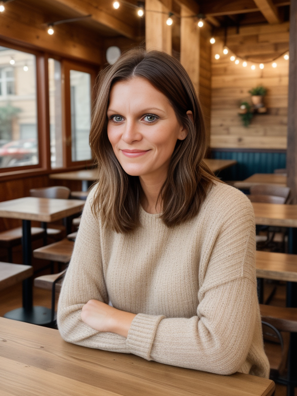
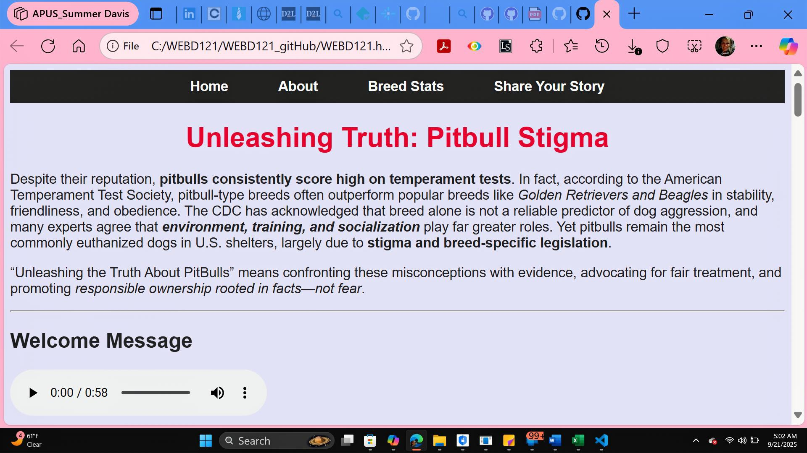
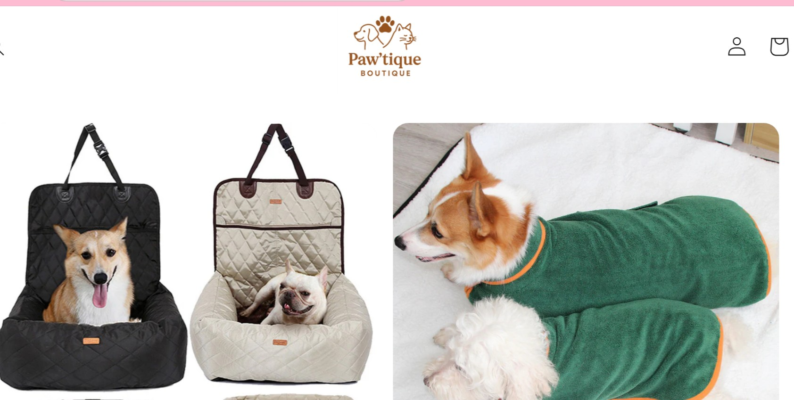
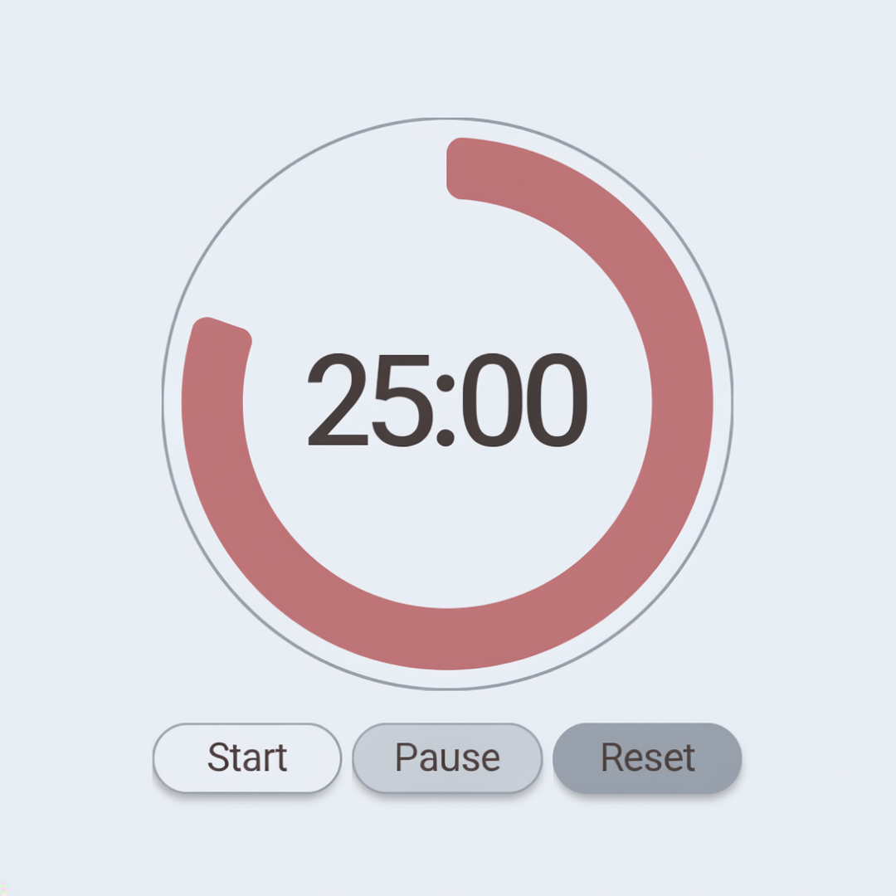
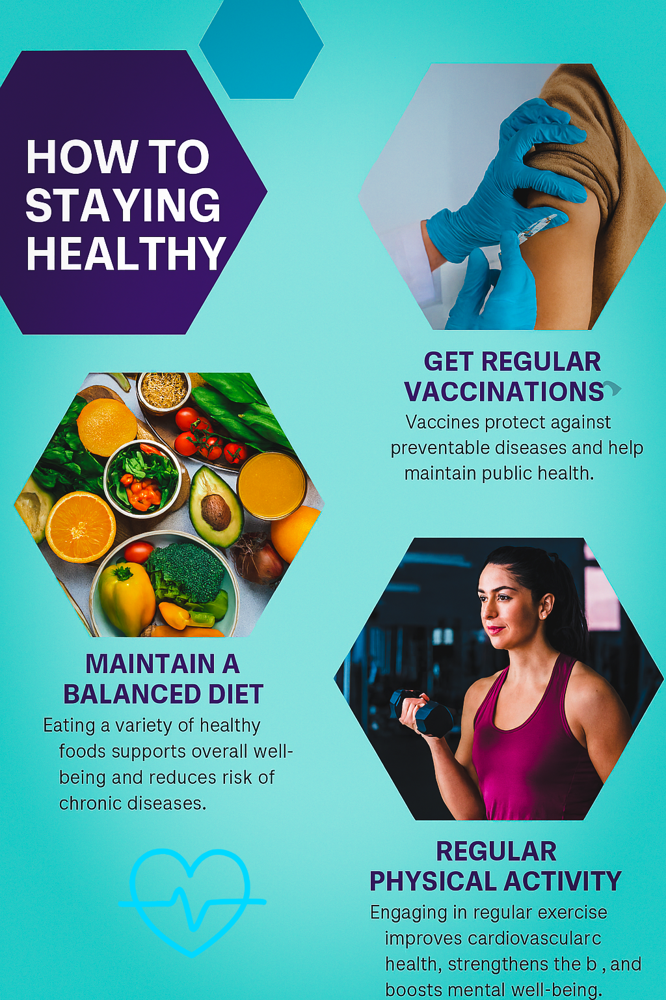
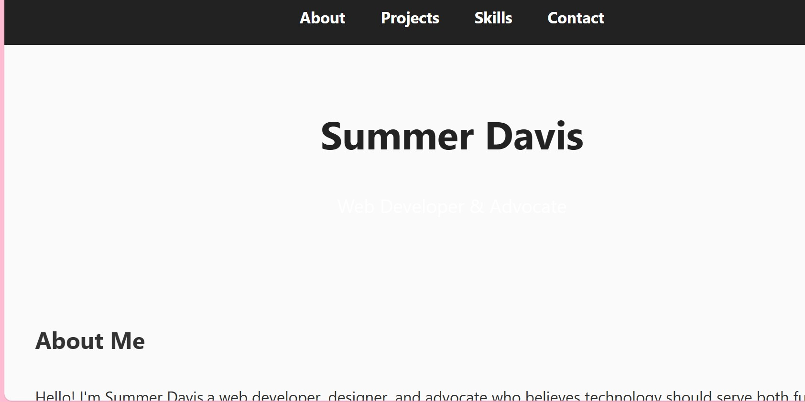
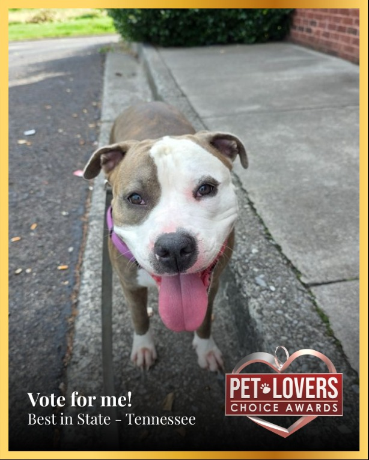

Smart Architecture
Clean, semantic HTML5 markup, modular CSS/SASS architectures, and performant JavaScript designed to scale gracefully.
I'm Summer Bethany Davis — Frontend Developer & UX Strategist. I transform complex ideas into bold, accessible, and conversion-focused web applications. Blending 18+ years of high-empathy customer leadership with Dean's List academic rigor and modern code craftsmanship.

Sassy isn't just an attitude—it's a high-standard engineering mindset that rejects boring, fragile, and inaccessible web design.
Clean, semantic HTML5 markup, modular CSS/SASS architectures, and performant JavaScript designed to scale gracefully.
Zero compromises on inclusivity. Strict adherence to WCAG 2.1 AA guidelines, keyboard navigability, and screen reader clarity.
Bespoke typography, intentional motion design, and delightful micro-interactions that make users smile and keep them engaged.
Combining frontend engineering with a 3.8 GPA business background to ensure every pixel serves conversion goals and real business growth.
18+ years of battle-tested human empathy and de-escalation expertise. A team player who communicates clearly and thrives under pressure.
How 18+ years of customer empathy, business acumen, and rigorous computer technology studies forged an unstoppable developer.
I am not your average junior developer who only knows how to copy tutorials. I spent 18+ years on the frontlines of high-volume customer service leadership, earning multiple "Employee of the Month" honors and mastering the art of rapid problem resolution, customer de-escalation, and empathetic communication.
When I pivoted into technology, I brought that human understanding with me. Coupled with a 3.8 GPA in Business Administration from AIU, high-achieving transfer coursework at APUS (3.4061 GPA), and a 4.0 GPA currently pursuing my Bachelor of Science in Computer Information Technology at Austin Peay State University, I write code that serves real human needs and moves business metrics.
Austin Peay State University (APSU)
Currently attending and actively pursuing a B.S. in Computer Information Technology while maintaining a perfect 4.0 GPA. Advanced coursework focuses on systems engineering, software logic, and modern application development.
American Public University System (APUS)
Rigorous foundational and intermediate web development and software architecture studies. Completed extensive technical coursework earning a 3.4061 GPA before transferring into Austin Peay State University to continue degree progression.
American InterContinental University (AIU)
Dean's List academic performance focusing on organizational leadership, financial metrics, consumer marketing, and conversion funnel optimization. Successfully transferred academic credits to American Public University System.
Cracker Barrel Old Country Store & Retail (Morristown, TN)
Delivered exceptional guest experiences in high-pressure environments. Earned multiple Employee of the Month honors, trained and mentored cohorts of 10+ new hires, and honed master-level conflict resolution.
Jefferson County High School
Strong foundations in mathematics, communications, and visual arts that sparked a lifelong curiosity in creative expression.
Hand-crafted web applications designed with semantic code, modern aesthetics, and rigorous accessibility standards.

Empowering voices with empathetic, WCAG-compliant design
A responsive advocacy platform built from the ground up to give community voices a safe, accessible digital space. Designed in Figma and developed with semantic HTML5, CSS3, and modern JavaScript.

Heartwarming pet lifestyle & boutique shopping experience
A joyful digital storefront concept designed for modern pet owners. Features custom product cards, interactive cart flows, and vibrant branding inspired by Summer's rescue dog, Shysti Mae.

Science-backed focus timer with ambient vibes & streak tracking
A distraction-free productivity app built to master workflow focus. Includes custom work/break intervals, audio notification cues via Web Audio API, and persistent stats saved to LocalStorage.

Transforming complex health guidelines into accessible visuals
An information design initiative converting dense medical guidelines into clear, empathetic infographics and responsive digital newsletters tailored for diverse community demographics.

Accessible micro-components with zero dependency bloat
A handcrafted suite of reusable UI primitives: dynamic changelogs, custom dropdowns, accessible datepickers, and 3D testimonial flip cards, built to adhere to strict WAI-ARIA authoring practices.

Pet advocacy, rescue community engagement & brand story
An interactive storytelling campaign championing animal welfare, adoption awareness, and responsible pet nutrition. Blends heartfelt photography with responsive, accessible layout engineering.
The tools and disciplines I use every day to build resilient, accessible, and high-performance digital products.
Whether you're looking for a passionate full-time junior frontend engineer or a high-energy builder for your next launch.
For hiring teams and select clients: I take your product concept, wireframe it, and deliver a fully functional, mobile-responsive prototype within 48 hours to prove direction and velocity.
Is your existing website alienating users or failing compliance audits? I conduct end-to-end audits of keyboard accessibility, screen-reader semantics, color contrast, and UX flow friction.
Looking for a dependable, high-grit developer who shows up every single day with curiosity, positive energy, and pride in their craft? I'm ready to contribute from day one.
I am actively interviewing for full-time Frontend Web Developer, Junior Software Engineer, and UI/UX engineering roles. Let's build something unforgettable together.